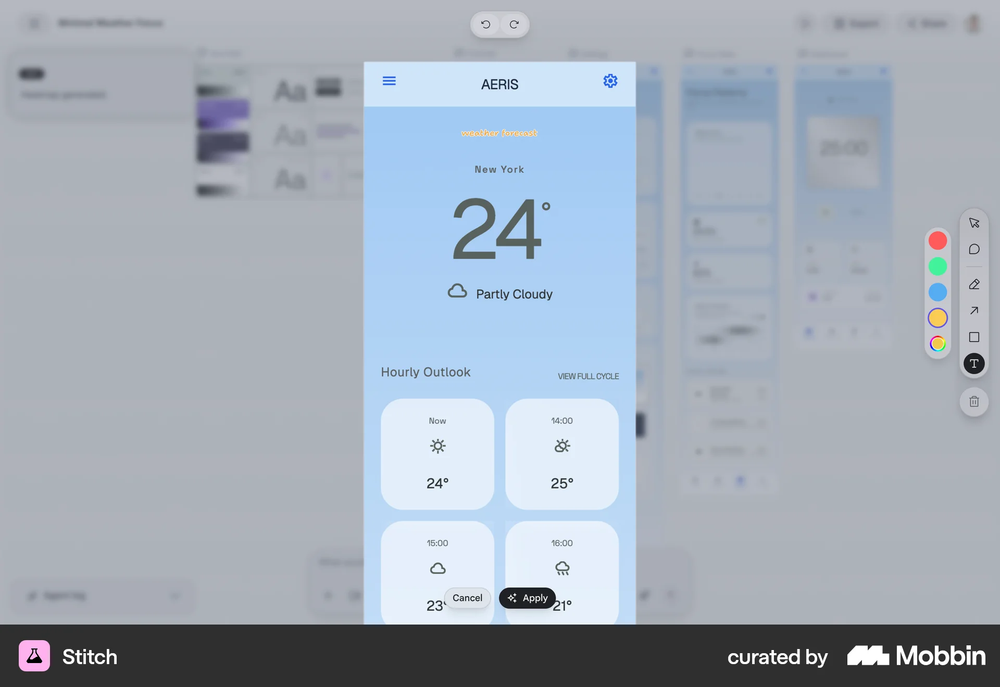
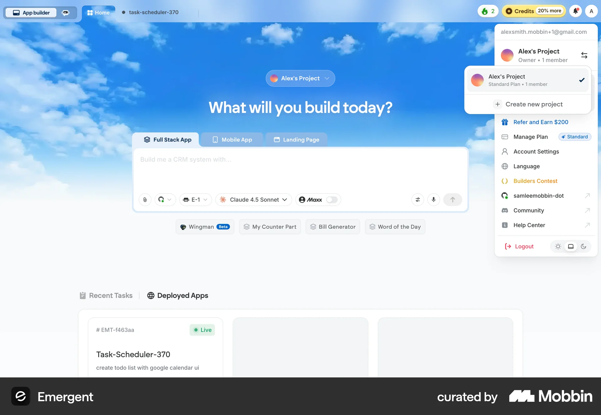
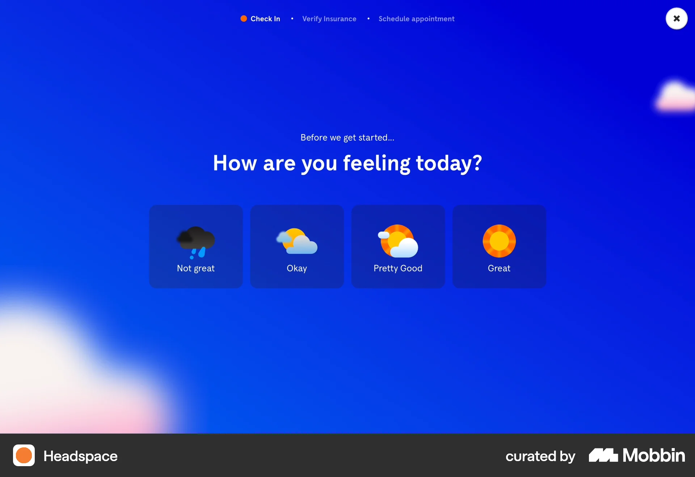

TAEWON SEO · DESIGN RESEARCH · 2026.09.30
밝은 석재, 가벼운 작업 공간,
살아 있는 창밖.
검정 가구가 있는 공간에서도 바닥·벽·테이블의 명도를 나누면 조용한 긴장감과 편안함이 함께 남습니다.
실제 웹 페이지 보기 · 출처·쿼리·판단 원문 · 이전 광공 스타일 조사
 새 밤 원화. 밀키와 창밖 효과, 모니터 화면, 작업등은 웹에서 별도로 합성됩니다.
새 밤 원화. 밀키와 창밖 효과, 모니터 화면, 작업등은 웹에서 별도로 합성됩니다.
어두운 분위기와 칙칙함의 차이
이전에는 바닥, 테이블, 벽이 함께 어두워 가구의 윤곽과 재질 차이가 묻혔습니다. 검정 가죽 소파는 유지하고, 바닥은 따뜻한 회색 석회암, 테이블은 밝은 트래버틴, 벽은 그레이지로 바꿨습니다. 장식의 양을 늘리기보다 큰 면의 밝기 차이로 공간을 읽게 합니다.
이는 정식 인테리어 사조인 ‘광공 스타일’의 규칙을 따르는 것이 아니라, 앞선 문화적 맥락 조사에서 찾은 절제·고층 전망·생활감의 통제라는 이미지를 현재 요청에 맞게 해석한 설계입니다.
Black leather
#242527
Smoked walnut
#81766b
Warm limestone
#A69A89
Ivory stone
#D5C5AD
Milky’s ball
#C84B3D
컴퓨터가 공간 안에 자리 잡는 방식
오른쪽 벽을 따라 얇은 월넛 상판과 알루미늄 지지대를 배치했습니다. 낮은 등받이의 가죽 의자는 창밖을 가리지 않고, 은색 모니터와 검정 관절형 작업등은 재료 수를 늘리지 않습니다. 턴테이블도 같은 상판 끝에 남겨 작업과 음악이 함께 있는 코너로 만들었습니다.
Herman Miller Aluminum Group의 가벼운 프레임 구조, Flos Kelvin Edge의 방향성 있는 작업 조명을 참고했습니다. 특정 제품의 정확한 복제품이 아닌 별도 일러스트입니다. 천장 코브와 책상 아래에는 간접 조명, 작업면에는 사용자가 켜는 국소 조명을 둡니다.
날씨와 시간에 따라 보이는 것
| 상태 | 디테일 | 동작 기준 |
|---|
| 다섯 시간대 | 아침의 낮은 빛, 중립적인 한낮, 오후의 긴 그림자, 저녁의 하늘, 밤의 간접 조명. | 각각 별도 원화. 흐리거나 비 오는 낮에는 태양이 그려지지 않은 확산광 원화 사용. |
| 밤 | 빌딩 창마다 느리게 달라지는 불빛, 강물의 작은 반짝임, 유리에 비친 실내 조명. | 불빛 주기 9–33초. 별똥별은 맑은 밤만, 첫 대기 12–20초 이후 28–56초 간격. |
| 비 | 멀고 가까운 빗줄기, 원화를 확대 굴절하는 유리 물방울, 작은 방울을 흡수하며 흐르는 물길. | 최대 76개 유리 방울. 비가 그치면 약 22초에 걸쳐 잔흔이 사라짐. |
| 눈·안개·구름 | 크기와 속도가 다른 눈송이, 수평으로 흐르는 낮은 안개, 하늘을 덮는 옅은 구름. | 8개 창 유리와 소파 실루엣을 함께 마스킹. 창틀·실내 바닥에는 강수 효과를 그리지 않음. |
| 작업 공간 | 클릭해서 켜는 모니터의 코드 입력, 별도 작업등과 책상 위 빛 번짐. | 자동 재생 없음. 모바일은 Desk 패널의 실제 장면 확대 화면으로 조작. |
| 성능·접근성 | 최대 30fps, 정적인 맑은 낮에는 프레임 루프 정지. 숨긴 탭의 시각 효과 정지. | 기존 배경 음악은 계속 재생. 동작 줄이기 설정과 Animate the view 해제를 지원. |
다섯 시간대 원화
실제로 확인한 출처와 적용 판단
Mobbin은 MCP로 반환된 실제 화면 3개를, 21st.dev는 MCP로 가져온 컴포넌트·데모 소스 2개를 확인했습니다. UI 사례는 조작과 상태 표현에, 건축·가구 제조사의 1차 자료는 재료와 가구 선택에 사용했습니다. 검색 사례가 실제 날씨 서비스인 것처럼 해석하지 않았습니다.
mobbin · ba85cb38-81ba-4877-acab-008ef31eb3e5
Stitch editor contains a pale-blue weather mockup: readable condition/time labels; use clear labels, do not treat mockup as observed real forecast functionality.
mobbin · 3d02d9ec-583d-4af8-9508-3b67ff59fa73
Emergent has a sky-photo backdrop fading into a pale workspace; adopt separation between atmospheric backdrop and readable controls, reject saturated blue.
mobbin · 25cf4b6b-55f7-454c-b830-30c419456a9f
Headspace mood check-in uses weather pictograms with visible labels and distinct choices; use clear state naming, not its mood/forecast semantics.
21st · 21st-924Full component and demo source read. Adopt fading tail and bounded frame loop concept. Reject frequent neon/pixel effects; independently implement elapsed-time movement, weather gating, hidden/reduced-motion behavior and complete timer cleanup. No source copied.
21st · 21st-18484Full component and demo source read. Adopt fading tail and bounded frame loop concept. Reject frequent neon/pixel effects; independently implement elapsed-time movement, weather gating, hidden/reduced-motion behavior and complete timer cleanup. No source copied.
studio · studio-vercelKeep neutral UI hierarchy; light stone/palette is a spatial design choice, not a wholesale theme import.
web · norm-kolonPrimary text: warm neutrals, soft textures, brushed metal and gentle light/shadow contrast; adopt middle-value range. Retrieved photo 17 was facade, not interior evidence.
web · norm-naganoPrimary text and actual Lowres33 photo inspected: pale porous stone beside soft taupe textile and reflective glass. Adopt light honed stone, keep black leather as anchor.
web · herman-millerPrimary design story and product sheet: slim cast-aluminum frame and suspended seat. Adopt light silhouette and low back; use original unbranded illustration.
web · flosPrimary manufacturer describes adjustable direct task light, black/white options, 2700–3200K. Adopt slender articulated head and independent local light pool.
검증과 남은 한계
시간·날씨 조합, 유리 경계, 방울 합류·건조, 별똥별 빈도, 숨긴 탭·동작 줄이기·종료 시 프레임 정리, 모니터의 수동 시작을 자동 테스트로 검사합니다. 생성된 원화 자체는 확인했습니다. Chrome 연결 도구가 실행 파일 오류를 반환하여 실제 브라우저 화면·클릭 검증은 완료했다고 주장하지 않습니다.
Studio에 연결되지 않은 개인 프로젝트이므로 원격 동기화는 대기 중입니다. 실제 응답: “Connect the project before synchronizing research”. 로컬 리서치 자료는 모두 보존했습니다.
이전 버전 백업: backup/penthouse-before-workspace-20260930 @ cf48a43. 기존 original/noir 경로와 원화도 보존합니다.